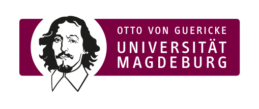
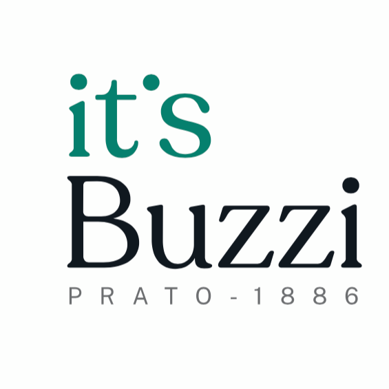

About
My Journey
Great products are built where technology, business, and customer needs meet. Great products are built where technology, business, and people come together. My journey into Product Management started with a technical foundation in mechanics and mechatronics, followed by studies in International Business and Economics and experiences across technical, commercial, and product roles.
Living and working across different countries, including Germany and Finland, shaped my approach to collaboration and product development. It taught me the importance of understanding different perspectives, adapting to new environments, and connecting people around a shared goal. Today, I bring together these experiences to build products with curiosity, structured thinking, and a focus on creating meaningful value.
The Product Approach
The Product Development Process
1. Strategic Framework Definition
Define market segments, regions, technologies, and product market combinations to build a strategic framework.
2. Market Intelligence & Data Collection
Gather and consolidate, internal, external, and market research data to create a reliable, data-driven decision-making foundation
3. Product-Market Analysis
Assess market positioning, sales performance, opportunities, risks, and portfolio dynamics to identify high-impact growth potential
4. Strategy Development
Analyze competitors and design winning product and go-to-market strategies aligned with business objectives.
5. Planning and Target Setting
Translate strategy into annual action plans, budgets, timelines, and measurable KPIs to ensure execution accountability.
6. Executive Alignment
Align product objectives with senior management to secure commitment, sponsorship, and cross-functional support.
7. Business Plan Presentation
Present the product roadmap and business strategy to stakeholders, driving clarity and organization-wide buy-in.
Personality
Strengths
Ownership
I naturally feel responsible for the work I'm involved in. Rather than focusing only on my own tasks, I tend to stay engaged, support the team where I can, and see things through to completion.
Structured Thinking
I naturally bring structure to complex situations. Breaking down problems, defining priorities, and creating clear plans helps me turn uncertainty into actionable next steps for the team.
Curiosity
I do not assume the first solution is the right one. I enjoy exploring different perspectives, asking questions, and understanding the reasoning behind decisions before moving forward.
Reliability
I value consistency and follow-through. I try to set realistic expectations, communicate openly, and be someone colleagues can rely on throughout a project.
Considered Communication
I believe good communication starts with listening. I enjoy discussing ideas in depth, asking questions, and making sure decisions are clear, understood, and supported by everyone involved.
Growth Areas
Broader Stakeholder engagement
Building relationships across a wider range of stakeholders, especially outside my immediate teams, to create stronger alignment and shared understanding.
Presence in larger groups
Becoming more comfortable contributing in larger meetings and discussions, while maintaining the thoughtful communication style that comes naturally to me.
Advocating for Ideas
Spending more time communicating the value behind a product vision, ensuring good ideas are not only developed but also clearly understood and supported.
Experience & Impact
Technical Product Manager
2025 - Present | Conti Valerio S.r.l., Germany
I take products from an early market idea through to a well-positioned offering and stay responsible for them well beyond launch. It starts with listening: understanding customers, competitors, and where our products genuinely win or fall short, then turning that into the MRD R&D builds against.
I stay close through development, checking key milestones against market need and cost. At launch, I shape pricing, positioning, and go-to-market, and make sure Sales can tell the story well. Afterward, I track real performance and decide when a product needs refreshing or retiring.
Throughout, I keep R&D, Sales, and Marketing pointed in the same direction, because strategy only holds up when the people around it are aligned on it.
Technical Sales and After Sales Specialist
2022 - 2024 | Conti Valerio S.r.l., Germany
This was my first role after relocating to Germany, and it put me directly in front of customers and the market from day one, supporting business development and scouting, representing the company at international trade fairs, and providing technical support to customers in the after-sales phase.
What stayed with me most was the vantage point: being the direct point of contact, at a fair or on a support call, meant constantly listening to how people actually talked about their needs and frustrations. That's where I first built a real feel for Voice of Customer, and it turned out to be the foundation for the product management path I moved into afterward.
Product Coordinator
2021 - 2022 | Conti Valerio S.r.l., Italy
In 2021, my role grew into product coordination across departments. I took the lead on product personalisation, delivering two customisation projects that year, while coordinating cross-departmental development work, managing briefing and reporting, and tracking product costs to support optimisation efforts.
Technical Product Operation Specialist
2019 - 2021 | Conti Valerio S.r.l., Italy
I managed BOM creation and updates in the ERP system, structuring product and component codes through every stage of modification.
Working as a bridge between the technical office and production, I supported new product launches and personalisation projects, contributed to exploded views for assembly drawings, and helped optimise processes along the way. I also handled product labeling to meet international certifications and compliance standards.
Education

B.Sc. International Business and Economics
2022 - 2025 | Otto-von-Guericke University, Magdeburg, Germany
The program builds a quantitative core through Mathematical Methods I & II, Statistical Methods I–III (econometrics and applied data analysis), Microeconomics, and Business Decision Analysis, alongside management fundamentals such as Decision & Strategy, Principles of (International) Management, and Entrepreneurship.
Further modules cover Marketing Performance Management, Economic Policy, and applied project/research seminars, connecting analytical methods with strategic and organizational decision-making across international business contexts.
Erasmus - European Mobility Program
2024-2025 |Tampere University, Finnland
Spent an exchange semester in Finland, working within an academic culture built on autonomy, direct communication, and consensus-based decision-making.
Collaborating with an international group of students strengthened my ability to adapt and work effectively across cultures, a skill set that carries over well to distributed, multicultural teams.

Technical Diploma in Mechanics and Mechatronics
2012 - 2017 | I.T.I.S. T. Buzzi, Prato (PO), Italy
My path started with a technical diploma in Mechanics and Mechatronics, learning to read materials, machines, and production processes before I ever set foot in an office. I trained to design mechanical systems, follow industrialisation from concept to production, and understand how automation and quality standards shape what gets built, a technical eye that still shapes how I work today.
That foundation, paired with the coordination skills I've built since, lets me move naturally between the technical office and the wider business.